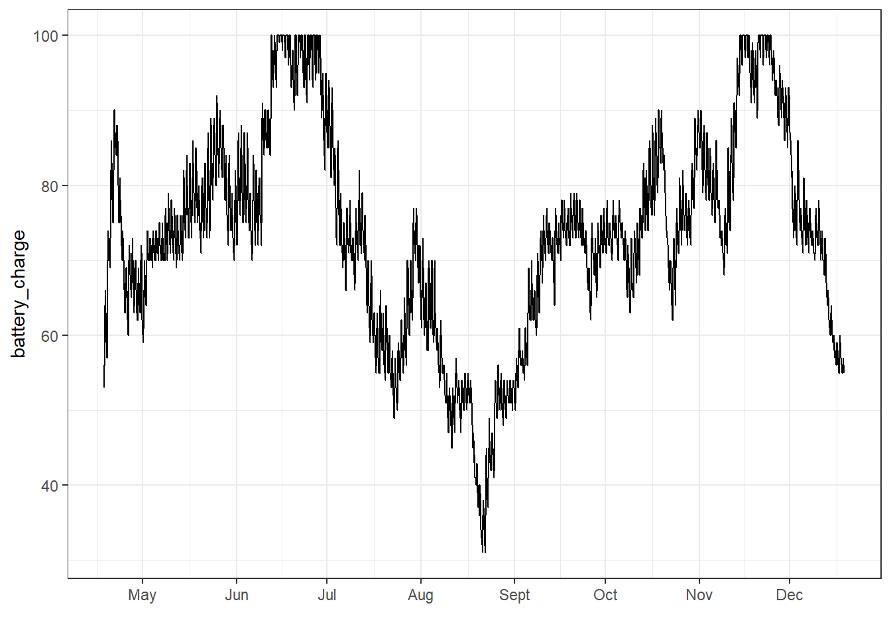

# install.packages("devtools")
devtools::install_github("MiriamLL/larus")larus
An R package designed for working with GSM data.
Intro
This package offers tools for data manipulation, trip identification, and calculation of trip parameters like duration, maximum distance, and path length. Additionally, it supports trip interpolation.
There are three key issues in determining the foraging trips in GSMs attached to gulls:
Battery charge and gaps (intervals) in the data.
Central locations might change, so foraging trips can be difficult to identify.
The gulls just do whatever they want.
For detailed instructions go to: https://github.com/MiriamLL/larus
Install
You can install the development version of larus from GitHub with:
Load packages
library(larus)Battery checks
library(tidyverse)
library(scales)
library(ggplot2)Plot to see changes in battery charge over time.
ggplot(GSM_battery, aes(x=daytime, y=battery_charge)) +
geom_line() +
scale_x_datetime(labels = date_format("%b"),date_breaks = "1 month")+
theme_bw()+
xlab('')
Example of use
Separating by month makes it more easy to observe
This_month<-'06'
This_month_text<-'Jun'Trips_01locs<-GSM_locs %>%
filter(month==This_month)nest_central_location<-data.frame(Longitude=-110.33979846296234,Latitude=24.28728834326802)plot_check(my_locs=Trips_01locs,my_central_location=nest_central_location)Trips_02outside<-Trips_01locs %>%
filter(inside=='outside_central')Previous_params<-data.frame(trip_id=c("trip_00001"))trip_number_sequence<-continue_trip_sequence(my_previous=Previous_params$trip_id)[1] "trip_00001"
[1] 1Trips_03trips<-Trips_02outside %>%
mutate(num_seq=as.numeric(num_seq))%>%
mutate(trip_number = (cumsum(c(1L, diff(num_seq)) != 1L)))%>%
mutate(trip_number = trip_number +1 + trip_number_sequence)%>%
mutate(trip_number = stringr::str_pad(trip_number, 5, pad = "0"))%>%
mutate(trip_number = paste0("trip_", trip_number))plot_trips(my_locs=Trips_03trips,my_central_location=nest_central_location)Calculate parameters
Trips_04params<-calculate_params(my_locs=Trips_03trips,
my_daytime='daytime',
my_format= "%Y-%m-%d %H:%M:%S",
my_units="hours",
my_divider="trip_number",
my_gaps='gaps_min')Check if values are plausible
range(Trips_04params$duration)[1] 0.0000 14.4175hist(Trips_04params$duration)- However, central locations might change, so foraging trips can be difficult to identify, so go to the github page and follow the instructions on the reevaluate section.
Citation
Lerma, M. 2025. R package ‘larus’. https://github.com/MiriamLL/larus